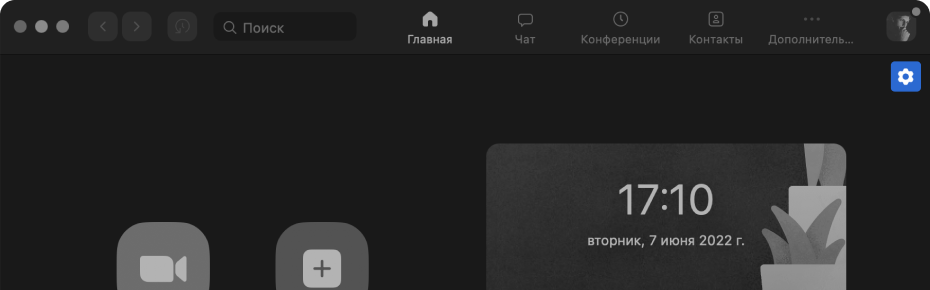
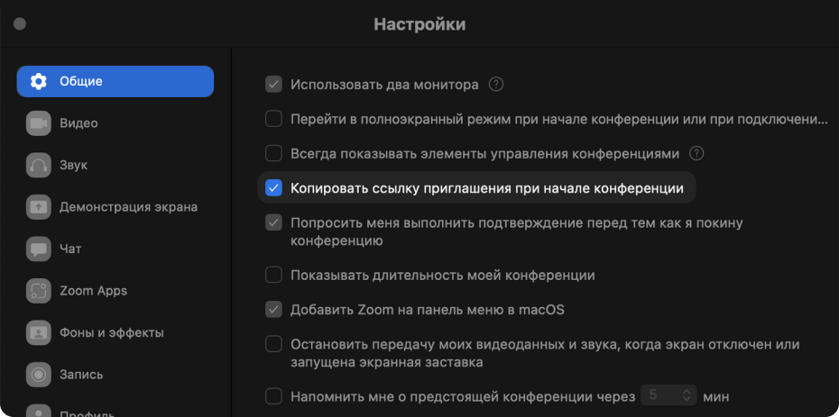
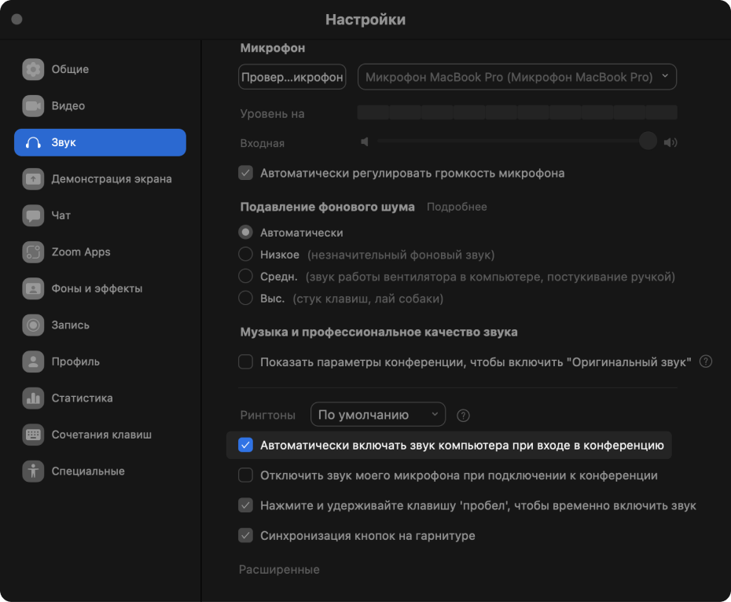
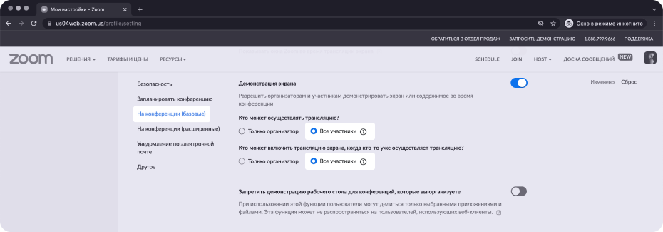

2 минуты
займёт настройка
10 минут
экономии каждый день
бесконечно сэкономленные нервы
НАСТРОЙКИ ZOOM
ДЛЯ КОМФОРТНОЙ РАБОТЫ В КОМАНДЕ
Копировать ссылку автоматически
После создания конференции сразу же отправьте ссылку команде или клиенту. А не переходите по разным уровням меню
 Подключать звук автоматически
Подключайтесь к конференции и общайтесь сразу же, без всплывающих окон, в которых вы постоянно жмете на одну и ту же кнопку.
Отключить
комнату ожидания в браузере
Не отвлекайтесь на то, чтобы каждый раз пускать людей в конференцию из комнаты ожидания и забудьте о фразе «Коллеги, извините, а пустите Вику».


Разрешить всем участникам показывать экран
Перестаньте перекидывать организатора от участника к участнику для демонстрации экрана. Захотел продемонстрировать экран — пожалуйста!
